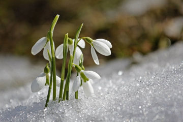
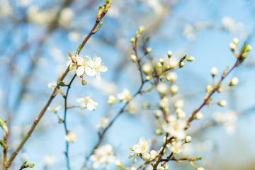

Концерт № 1 ми мажор «Весна», RV 269 |
||
|---|---|---|
|
Весна грядёт! И радостною песней Полна природа. Солнце и тепло, Журчат ручьи. И праздничные вести Зефир разносит, точно волшебство. Вдруг набегают бархатные тучи, Как благовест звучит небесный гром. Но быстро иссякает вихрь могучий, И щебет вновь плывёт в пространстве голубом. Цветов дыханье, шелест трав, Полна природа грёз. Спит пастушок, за день устав, И тявкает чуть слышно пёс. Пастушеской волынки звук Разносится гудящий над лугами, И нимф танцующих волшебный круг Весны расцвечен дивными лучами. |
Allegro
Пришла весна |
 |
|
Largo e pianissimo sempre
Спящий пастух |
||
|
Allegro, danza pastorale
Деревенский танец |
 | |